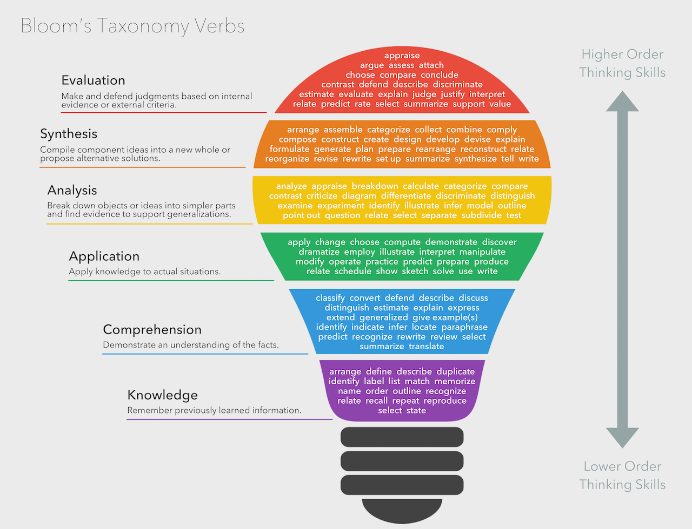

The objectives you put on your lesson plan must be taught within the lesson. If it's not within your objective, you cannot assess it.
Objectives only state new skills/knowledge students will take away as a direct result of the lesson.
Keep the objective to a couple, assess and teach based and focused on those, and if there's something more than needs to be taught, a new lesson can be created to build upon the first.
Use Bloom's Taxonomy to write your objectives. The objectives must be measurable!
When developing your objectives, ask yourself the following information:
What is the topic of the lesson?
What do I want students to learn?
What do I want them to understand and be able to do at the end of class?
What do I want them to take away from this particular lesson?
When writing your objectives on the lesson plan, sort them from most important to least important. This will hep you for managing class time and accompishing the more important objectives. Consider the following questions:
What are the most important concepts, ideas, or skills I want students to be able to grasp and apply?
Why are they importnat?
If I ran our of time, which ones could not be omited?
Conversely, which ones could I skip if I ran out of time?
Writing Assessment
Assessment explains what kind of evidence is needed to mark the extent to which each student achieved each of the objectives you have listed.
Assessment is not the same as grading.
Assessments should reflect what you as the teacher would like to see come out of the lesson and refer to the objectives. The outcome or result of the lesson, not the product
Formative Assessment should have four levels: Exemplary, Proficient, Developing, Inadequate
Summative assessment would have standard letter grades or points.
Either way, you must explain clearly and directly the features you're looking for. What does a distinguished summary look like? What does it contain? How about a proficient summary? A Developing summary? Inadequate summary?
A great idea from a fellow classmate is to separate each objective in the assessment. Here is a an outline of how this would look:
Objectives
Objective 1:
Objective 2:
Assessment
Exemplary:
Objective 1 Assessment:
Objective 2 Assessment:
Your lesson plan is concerned only with assessment of the stated objectives!!
Advice from Zoom Session with Kirchoff: When writing your assessment, place the focus on the objective, rather than the student. For example, instead of saying, "An exemplary student will recall information about the Civil War by providing x, y, and z," you would write, "An exmplary recollection of information about the Civil War would provide x, y, and z."
Bloom's Taxonomy (Lightbulb)

Kirchoff's Additional Lesson Plan Tips
A lesson plan is not a play-by-play of the entire class period.
Do not include things like taking attendance, asking students questions about their weekend, and so on.The lesson plan details the lesson, not the class.
Create a realistic timeline.
Narrow your objectives to one or two you want students to learn. You have to make sure you solidly cover what you want the students to learn, not rush to get a bunch of things taught in one period.
Be prepared for confused students.
Have additional examples, alternative activites, or different resources for students so you are flexible and others can learn in a different way.
Write an estimated time for each step.
One tip for doing this is to estimate how much time it would take to actually do that step, then add a few additional minutes for some wiggle room. Be flexible and leave some extra time at the end of class too for any remaining questions.
Inform your students of your plan.
Keeping them in the loop will keep them engaged. You can write an agenda on the board or hand out an assignment sheet.
Reflect on your lesson plan.
Lessons don't always go to plan, sometimes they do. Reflecting on what worked and what did not will assist you in future lessons.